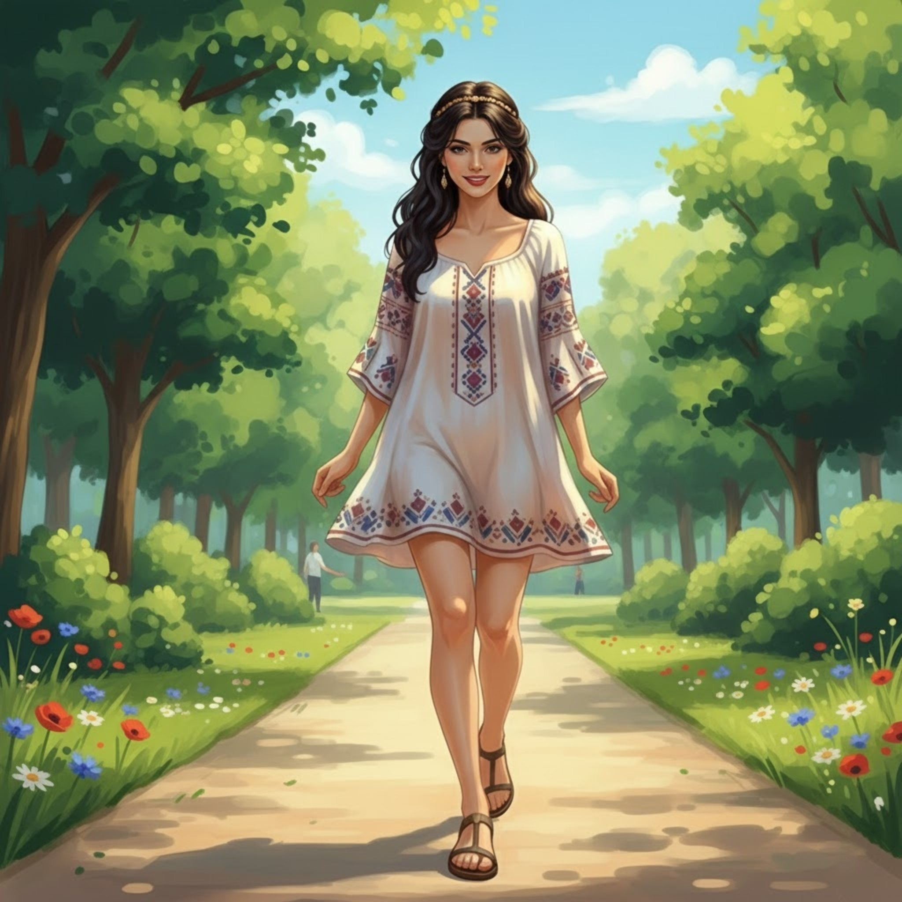
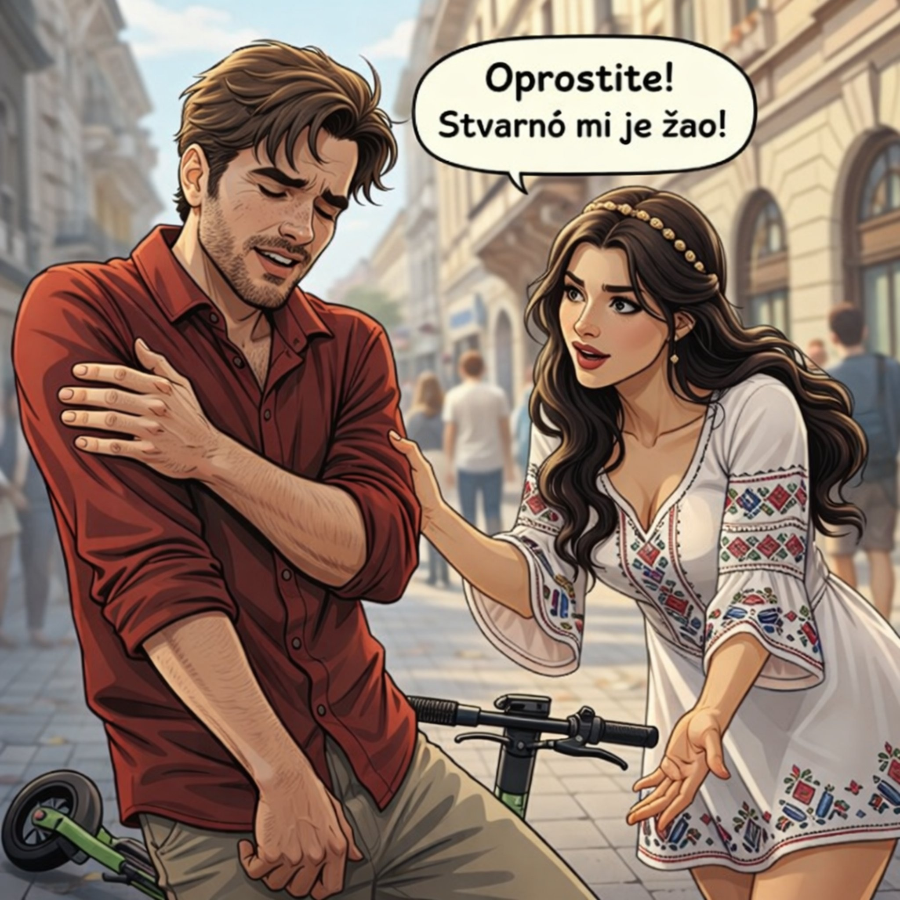
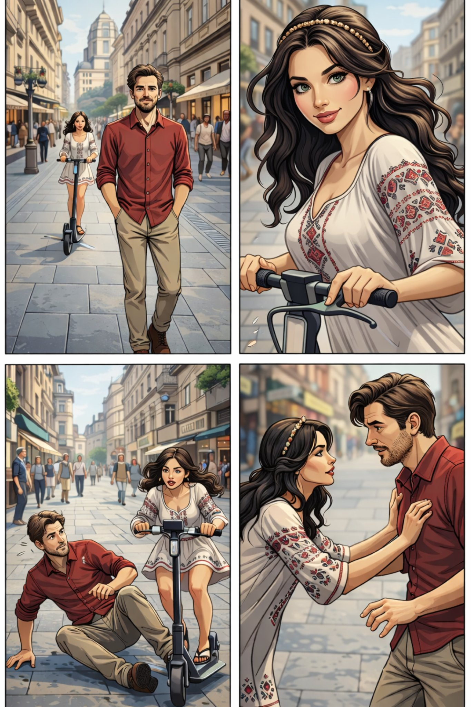

Поглавље 7: Улицама Београда
Página individual del capítulo con lectura y ejercicios.



Луис и Наташа се буде следећег јутра. Сунце светли кроз прозор. Они одлучују да шетају градом.
"Хајде да идемо до Скадарлије," предлаже Наташа. "То је стара четврт са много историје."
Луис се слаже. Они излазе из стана и крећу ка Скадарлији. Улице су пуне људи. Скадарлија је позната по својим ресторанима и уметничким галеријама.
Док шетају, Наташа пита Луиса: "Одакле си ти?"
"Ја сам из Аргентине," одговара Луис.
"Колико имаш година?" пита Наташа.
"Имам 40 година," каже Луис. "Ја сам путник и волим језике. Дошao сам у Београд да вежбам српски."
Наташа се смеје. "То је одлично! Београд је добар град за учење језика."
Они настављају шетњу. Наташа показује Луису места где су пале бомбе током бомбардовања НАТО-е. Једна од бомби није експлодирала и оставила је траг на земљи.
"Погледај ово," каже Наташа. "Ово је место где је пала бомба."
Луис гледа траг. Он је изненађен. Траг личи на његов цртеж са Софијом и апокалипсом.
"Наташа, погледај ово," каже Луис. "Ово је исто као мој цртеж."
Наташа гледа траг и цртеж. Нема сумње. Траг и цртеж су исти.
"То је невероватно," каже Наташа. "Твој цртеж је предвидео будућност."
Луис је шокиран. Он гледа Наташу. "Шта то значи?"
Наташа га грли. "Не знам, али морамо бити опрезни."
Они настављају шетњу, али Луис осећа да се нешто лоше спрема.
Крај седмог поглавља.